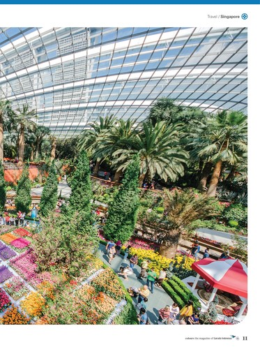

Voice of Garuda
Salam Garuda Indonesia
Tanpa terasa kita telah memasuki penghujung semester pertama tahun 2022. Ditengah upaya kita untuk terus beradaptasi dengan berbagai dinamika yang terjadi dengan cepat, kita dapat menarik sebuah pelajaran atas makna penting nilai kebersamaan, yang dalam konteks situasi hari ini dapat didefinisikan sebagai komitmen untuk menahan diri dan saling menjaga.
Nilai tersebut yang turut menjadi sebuah fundamental penting dalam menutup momentum kekhidmatan bulan puasa maupun perayaan Idul Fitri 2022 di awal bulan ini.
Selaras dengan nuansa suka cita yang mewarnai antusiasme sebagian besar masyarakat untuk menyambut Hari Kemenangan dengan melakukan tradisi mudik setelah sempat tertunda lebih dari dua tahun lamanya, momentum Lebaran kali ini turut menjadi penanda penting bahwa upaya adaptasi kita bersama menuju kenormalan baru itu mulai menunjukan hasil yang baik. Hal tersebut yang tentunya perlu disikapi secara bijak dengan tetap memastikan semangat untuk saling menjaga dapat terus dijalankan secara optimal pada momentum istimewa ini.
Berbicara mengenai tradisi mudik, kami di Garuda Indonesia sepenuhnya menyadari bahwa Mudik Lebaran bukan semata merupakan periode peak season, melainkan juga momen bagi kami sebagai national flag carrier untuk memberikan kontribusi terbaik dalam memastikan kebutuhan akan aksesibilitas udara dapat dihadirkan melalui kehadiran layanan penerbangan aman, nyaman, dan sehat bagi masyarakat untuk menjembatani kebahagiaan bersilahturahmi kepada keluarga dan orang-orang terdekat.
Berangkat dari semangat tersebutlah, kami terus berupaya untuk memastikan kesiapan operasional penerbangan senantiasa dapat berjalan dengan optimal. Selain mengoptimalkan kapasitas ketersediaan kursi Garuda Indonesia Group dengan menghadirkan lebih dari ketersediaan 855.119 kursi penerbangan —domestik dan internasional—selama periode Mudik Lebaran berlangsung, kami juga terus berkomitmen untuk memberikan layanan penerbangan terbaik bagi masyarakat yang disertai dengan konsistensi penerapan protokol kesehatan secara maksimal pada seluruh lini operasi.
Lebih lanjut, komitmen untuk senantiasa hadir dalam berbagai program pengembangan ekonomi khususnya terkait dengan optimalisasi pengelolaan SDM yang juga diselaraskan dengan relaksasi kebijakan perjalanan internasional, pada awal April lalu Garuda Indonesia menjalin sinergi strategis dengan juga telah Asosiasi Penyelenggara Permagangan Luar Negeri (AP2LN) Melalui sinergi tersebut, sejalan dengan fokus penempatan peserta magang Indonesia ke Jepang oleh AP2LN, Garuda Indonesia akan memberikan harga khusus untuk rute “Jakarta – Haneda” bagi peserta magang yang berangkat menuju Tokyo. Selain untuk memberikan added value bagi AP2LN dan seluruh peserta program permagangan di Negeri Sakura tersebut, kami berharap sinergi antara Garuda Indonesia dan AP2LN dapat berkontribusi terhadap upaya pengembangan Sumber Daya Manusia (SDM) Indonesia.
Lebih dari itu, sinergi tersebut juga diharapkan dapat memberikan dampak positif bagi hubungan kerja sama Indonesia - Jepang dalam penyelenggaraan program permagangan luar negeri—yang telah berlangsung selama hampir tiga dekade.
Sementara itu, sejalan dengan komitmen kami untuk senantiasa mengedepankan prinsip Tata Kelola Perusahaan yang Baik – khususnya dalam memenuhi regulasi yang ditetapkan oleh Kementerian BUMN RI, sebelumnya Garuda Indonesia juga telah berhasil meraih standarisasi Information Technology (IT) Maturity Level yang merupakan penilaian tingkat kematangan implementasi tata kelola di bidang Teknologi Informasi (TI) pada seluruh aktivitas bisnis perusahaan. Garuda memperoleh skor 3.51(Level 3.00 / Defined Level) dalam audit asesmen standarisasi IT Maturity Level atas pengukuran kualitas tata kelola dan bisnis proses organisasi TI yang telah terdefinisikan dengan baik secara efektif dan tepat guna, sehingga dapat memitigasi risiko pengelolaan teknologi informasi secara terstruktur.
Tentunya teknologi informasi dan aset digital merupakan fondasi penting dalam fokus kinerja Garuda, oleh karenanya komitmen pemenuhan regulasi dalam fokus penerapan Good Corporate Governance maupun prosedur audit yang komprehensif menjadi aspek krusial sebagai basis transformasi IT yang tengah kami akselerasikan dalam tata kelola bisnis baik dalam komitmen penyelarasan bisnis proses maupun misi menghadirkan layanan penerbangan yang semakin seamless melalui pendekatan digitalisasi layanan yang diselaraskan dengan shifting behavior pengguna jasa.
Pada akhirnya, berbagai peluang yang hadir seiring membaiknya ekosistem industri penerbangan di tahun ini akan menjadi semangat tersendiri bagi kami, khususnya dalam mengakselerasikan langkah pemulihan kinerja Garuda Indonesia dari dampak pandemi. Kami sangat mengapresiasi dan berterima kepada masyarakat dan seluruh stakeholders yang terus mendukung Garuda Indonesia di masa penuh tantangan ini.
Melewati momentum yang penuh kebaikan di bulan Mei ini, perkenankan kami turut mengucapkan Selamat Hari Raya Waisak bagi masyarakat Indonesia yang merayakan, semoga semangat perayaan Waisak menjadi momentum kebersamaan untuk merefleksikan nilai kebaikan dan kebahagian dalam penghidupan Kita.
Lebih lanjut, kami juga memanjatkan pengharapan atas berbagai keberkatan, cinta kasih dan kedamaian bagi umat Kristiani yang pada bulan ini turut memperingati Hari Kenaikan Isa Almasih.
Akhir kata, melalui momentum Lebaran kali ini, perkenankan kami juga menyampaikan ucapan “Selamat Idulfitri 1443 H. Mohon Maaf Lahir dan Batin.” Semoga momentum Idulfitri menjadikan kita pribadi yang mampu memaknai kemenangan sebagai peluang untuk menghasilkan lebih banyak kebaikan
Salam sehat
Irfan Setiaputra
Travel
Singapore
Di Singapura, Anda akan melihat taman publik di mana-mana. Colours mengunjungi Singapura, salah satu kota terhijau di dunia untuk mengeksplorasi dan menikmati alam di ruang-ruang terbukanya.
Singapura memang unik. Di negara yang padat dengan 5,78 juta penduduk ini, bahasa yang terdengar di jalan bermacam-macam, dari Mandarin sampai Tamil, Melayu sampai bahasa Inggris.Perdana Menteri pertamanya, mendiang Lee Kuan Yew, memelopori gerakan “Garden City” pada pertengahan 1960-an, sebuah ideologi yang telah diwujudkan dalam bentuk ruang-ruang hijau yang tersebar di kota metropolis nan ramai ini.
Dinobatkan sebagai “Kota Terhijau Kedua di Dunia” oleh World Cities Culture Forum, hampir setengah dari luas tanah Singapura dijadikan taman dan kebun. Memilih taman mana yang akan saya kunjungi bukanlah hal mudah, jadi saya memutuskan untuk bertanya kepada beberapa penduduk lokal.
“Tergantung di daerah mana Anda tinggal,” kata Lina, ekspatriat asal Belanda yang telah tinggal di kota ini selama dua tahun. “Saya tinggal di Robertson Quay dan saya ikut pelatihan di taman tiga kali seminggu.” Ruang terbuka hijau favoritnya adalah Fort Canning, karena dekat dari rumah, berbukit dan memiliki banyak tangga, cocok untuk latihan keras yang sangat ia sukai. Gardens by the Bay bisa dibilang merupakan ruang terbuka paling ikonis di Singapura. Letaknya di dekat Marina Bay.Bagi Byron Lim, pilihannya adalah MacRitchie Reservoir, yang terletak lebih jauh ke utara. “Anda harus berkendara atau naik MRT ke Marymount, tapi begitu sampai di sana Anda akan benar-benar merasa jauh dari kehidupan kota, dan anak-anak menyukainya,” katanya pada saya sambil minum kopi di Orchard Road yang ramai. “Tapi jangan memberi makan monyet!” katanya sambil tertawa.
Jelas, ungkapan “penilaian setiap orang berbeda-beda” berlaku ketika memilih ruang hijau yang wajib dilihat di kota ini. Dengan gambaran umum tentang taman-taman yang harus dikunjungi, saya mengikat tali sepatu dan bergerak untuk menjelajahi alam.
The Futuristic Garden
Gardens by the Bay bisa dibilang merupakan ruang terbuka paling ikonis di Singapura. Letaknya di dekat Marina Bay. Yang membuat taman ini unik dibanding taman-taman lain adalah pemandangannya yang kian indah bila dinikmati di malam hari.
Taman kota revolusioner ini memiliki 18 “supertrees” atau ‘pohon super’ yang menjulang setinggi 25–50 meter— keajaiban arsitektur dengan tanaman merambat yang melindungi dari sinar matahari tropis pada siang hari dan menyala seperti video musik elektronik di malam hari. Memiliki fungsi ramah lingkungan dengan panel-panel surya yang menangkap energi matahari, pohon-pohon super ini menjadi bukti kemampuan Singapura. Saat berjalanjalan di taman yang megah ini pada Sabtu malam, saya terpesona melihat kemampuan manusia yang memadukan unsur futuristik dengan alam.
Saya mendengar tawa dari sekelompok pengunjung yang sedang menikmati kehijauan di bawah supertrees, sambil menghabiskan waktu dengan minuman dan makanan ringan yang dibawa dari luar taman. Beberapa orang tampak asyik mengobrol dan hampir tidak memperhatikan pertunjukan lampu dan suara di atas supertrees. Saya berjalan melewati kerumunan itu dan bersantai di atas sebuah batu besar, menikmati pertunjukan dan mengagumi permainan warna dan musik yang menakjubkan.
The Colonial Garden
Singapore Botanic Gardens didirikan tahun 1859 oleh Agri-Horticultural Society dan berfungsi sebagai taman yang lebih tradisional dibanding Gardens by the Bay.
Dinobatkan sebagai Situs Warisan Dunia UNESCO pada 2015, taman yang merefleksikan gaya lanskap Inggris ini begitu luas, sehingga diperlukan beberapa hari untuk menjelajahi keseluruhan taman.
Pemerintah Singapura juga telah menyiapkan fitur yang disebut DIY Trail Guides, untuk para pengunjung taman yang lebih suka berjalan-jalan sendiri.Kunjungan saya ke sini dimulai dari Visitor Centre dan kantor pusat National Parks (NParks) kemudian saya berjalan turun ke Symphony Lake, yang dihuni kura-kura dan biawak besar, serta Shaw Foundation Symphony Stage. Sedikit lebih jauh, di atas hamparan rumput luas yang disebut Palm Gardens, pengunjung lainnya telah mendirikan kemah untuk sore hari, berbaring di kehijauan sambil menikmati bekal piknik dan bermain Frisbee atau sepak bola. Ini sepertinya bagian yang paling ramai di Botanic Gardens.
Sementara, mereka yang ingin suasana lebih tenang bisa dengan mudah melanjutkan jalan kaki ke banyak hamparan rumput lainnya di taman ini.
Anda yang menyukai anggrek mungkin tertarik mengunjungi National Orchid Garden, yang memiliki koleksi anggrek terbesar di dunia. Dengan biaya masuk 5 SGD untuk turis dan hanya 1 SGD untuk lansia dan mahasiswa, banyak yang akan Anda temukan di dalamnya, termasuk VIPOrchid Garden, tempat penyilangan anggrek yang didedikasikan bagi tamu-tamu penting dari seluruh dunia. Saat saya berkunjung ke sana, anggrek Barack dan Michelle Obama, jenis anggrek pygmy berwarna ungu dan kuning lembut, menjadi kebanggaan di bangunan utama.
Jika Anda lupa membawa bekal piknik seperti saya, Anda bisa mengisi perut di sejumlah kafe yang terdapat di Botanic Gardens, atau membeli kebutuhan piknik di Halia Provisions. Dengan bekal es kopi hitam di tangan, saya duduk di bangku dan menyaksikan pengunjung taman lalu-lalang, burung-burung terbang di atas kepala, dan dedaunan di ribuan pohon berdesir ditiup angin sore yang sejuk.
The Beach Garden East Coast Park, tempat favorit warga lokal untuk berakhir pekan, membentang lebih dari 15 kilometer di garis pantai yang indah, dalam area seluas 185 hektare. Saya ke sana pada hari Minggu sore dan memilih menyewa sepeda di taman seharga 5SGD. Menyusuri sepanjang garis pantai, saya merasa begitu jauh dari hiruk-pikuk Singapura dan mengerti mengapa orang-orang rutin datang ke sini untuk menikmati ketenangan.


Anda yang menyukai anggrek mungkin tertarik mengunjungi National Orchid Garden, yang memiliki koleksi anggrek terbesar di dunia.Pelari, pemain sepatu roda dan pengendara sepeda lainnya mendahului saya yang memilih bersepeda pelan di sepanjang pantai, menikmati angin sore yang lembut dan sinar matahari yang hangat. Di atas pasir dan di bawah pohon kelapa, orang-orang berkumpul bersama keluarga dan teman untuk menikmati sore dan suasana santai di pantai. Di air, orang-orang bermain jet ski, sementara puluhan tanker memenuhi cakrawala, satu-satunya hal yang mengingatkan bahwa saya masih berada di Singapura.
The Historic Garden
Terletak di jantung Kota Singapura,Fort Canning memiliki sejarah seterjal deretan tangganya. Berada di ketinggian 60 meter, bukit ini pernah menjadi markas Pusat Komando Timur Jauh dan Barak Tentara Inggris. Kini, taman seluas 18 hektare ini menjadi tempatnya para ahli sejarah, dengan situs-situs bersejarah seperti Raffles House, Fort Gate dan Underground Bunker yang dikenal sebagai Battlebox.
Sebuah pintu kecil yang mengarah ke dalam dan luar benteng, yang memungkinkan para serdadu keluarmasuk tanpa terdeteksi saat terjadi pengepungan, hingga kini masih berdiri di dalam kebun dan menjadi pengingat akan perang yang menakutkan. Meski Fort Canning berfungsi sebagai museum outdoor, non-sejarawan juga bisa menikmati taman ini dengan kegiatan seperti yoga, pelatihan boot camp, festival musik, dan tur mengelilingi taman.
Selain tur dengan pemandu yang tersedia di sebagian besar taman (biasanya pada akhir pekan), Pemerintah Singapura juga telah menyiapkan fitur yang disebut DIY Trail Guides, untuk para pengunjung taman yang lebih suka berjalan-jalan sendiri. Fitur ini dapat diunduh dengan mudah dari www.nparks.gov.sg. Saya sendiri tidak tuntas menjelajahi taman ini, dan pergi untuk melihat monyet-monyet nakal di MacRitchie Reservoir Park.
NEWS
Garuda Indonesia
Puncak Peak Season Lebaran, Garuda Indonesia Group Angkut 95 Ribu Penumpang Jakarta, 28 April 2022 Garuda Indonesia Group melalui layanan penerbangan Garuda Indonesia dan Citilink memproyeksikan angkutan penumpang sebanyak 95 ribu orang pada puncak periode peak season yang jatuh pada tanggal 28-29 April 2022.
Namun demikian, traffic penumpang tersebut diperkirakan masih akan terus bergerak dinamis sejalan dengan antusiasme masyarakat pada momentum libur Lebaran.
Direktur Utama Garuda Indonesia Irfan Setiaputra mengungkapkan, “Sejalan dengan diperbolehkan perjalanan mudik pada perayaan Lebaran kali ini, Garuda Indonesia berkomitmen untuk terus mengoptimalkan aksesibilitas layanan penerbangannya baik dari segi kapasitas maupun layanan penumpang”.
Selaras dengan antusiasme masyarakat untuk melaksanakan mudik pada momen Lebaran yang telah dinantikan sejak dua tahun lalu, Garuda Indonesia Group akan terus memastikan kelancaran operasional penerbangan khususnya melalui konsistensi penerapan protokol kesehatan guna menghadirkan layanan penerbangan yang aman, nyaman dan sehat bagi masyarakat. Hal tersebut yang diantaranya turut kami implementasikan melalui penyediaan layanan vaksinasi booster di Terminal 3 Bandara Internasional Soekarno-Hatta.
Lebih lanjut, pada hari ini Kamis (28/4)Garuda Indonesia Group mengangkut sebanyak 47.132 penumpang dengan total penerbangan sebanyak 326 penerbangan. Total penumpang Garuda Indonesia Group tersebut meningkat hingga 65,5 persen dibandingkan periode awal arus mudik pada tanggal 25 April 2022.
Sementara pada hari Jumat (29/4)Garuda Indonesia Group diperkirakan akan mengangkut sebanyak 48.360 penumpang dengan total penerbangan sebanyak 333 penerbangan.
Lebih lanjut, selain memaksimalkan operasional angkutan penumpang Garuda Indonesia Group juga mengoptimalkan lini bisnis cargo dimana pada periode peak season Lebaran 2022 ini, tonase kargo domestik maupun internasional di periode peak season Lebaran menunjukan peningkatan hingga 35% dibandingkan periode sebelum peak season. Adapun pada puncak periode mudik kali ini operasional penerbangan berjalan dengan lancar melalui capaian rata-rata On Time Performance sebesar 96%.
Garuda Indonesia Group Siapkan Lebih dari 855 Ribu Kursi Penerbangan pada Periode Peak Season Lebaran 2022
Jakarta, 19 April 2022 Garuda Indonesia Group melalui layanan penerbangan Garuda Indonesia serta anak usahanya, Citilink, menyiapkan sedikitnya 855.119 kursi penerbangan, baik untuk rute domestik maupun internasional, sebagai upaya untuk memfasilitasi kebutuhan aksesibilitas udara masyarakat selama periode peak season Lebaran 2022. Optimalisasi ketersediaan kursi tersebut dilaksanakan melalui pengoperasian pesawat berbadan lebar serta penambahan frekuensi pada rute-rute dengan permintaan yang tinggi (high demand) selama periode 25 April – 10 Mei 2022.
Selama periode tersebut,Garuda Indonesia akan menyediakan sedikitnya 288.219 kursi yang akan dioperasikan menggunakan sejumlah pesawat berbadan lebar, di antaranya A330-300 dan A330-200, serta pesawat narrow body B737-800 NG. Adapun Citilink menyiapkan hingga 566.900 kursi yang akan dilayani dengan armada A320-200 dan ATR72-600.
Direktur Utama Garuda Indonesia Irfan Setiaputra mengatakan, optimalisasi kapasitas penerbangan selama periode libur Lebaran ini merupakan salah satu bentuk komitmen Garuda Indonesia sebagai national flag carrier untuk berkontribusi mendukung kelancaran mobilisasi masyarakat, yaitu melalui penyediaan aksesibilitas udara sejalan dengan kembali diperbolehkannya perjalanan mudik masyarakat pada momentum Lebaran tahun ini.
“Kami memahami momen libur hari raya ini memiliki arti tersendiri di tengah antusiasme masyarakat, khususnya mereka yang telah menantikan kesempatan mudik sejak dua tahun lalu untuk merayakan hari kemenangan bersama keluarga di kampung halaman.
Untuk itu, penting bagi kami untuk memastikan tersedianya layanan penerbangan yang aman dan nyaman pada momen khusus ini dapat terjaga dengan baik, yang tentunya turut diselaraskan dengan konsistensi penerapan protokol kesehatan di seluruh lini operasional,” tambah Irfan.
“Kami memproyeksikan terdapat peningkatan traffic penumpang sebesar 35 persen pada periode Peak Season Lebaran tahun ini. Tentunya potensi peningkatan tersebut akan terus bergerak dinamis sejalan dengan demand masyarakat untuk kembali melaksanakan perjalanan mudik. Kami akan terus memantau situasi dan perkembangan kebutuhan penerbangan masyarakat demi memastikan layanan penerbangan dapat senantiasa terpenuhi. Kami juga secara intensif berkoordinasi dengan berbagai pemangku kepentingan untuk memastikan kelacaran arus mudik dan arus balik selama periode tersebut,” jelas Irfan. Dukung Pengembangan SDM Nasional, Garuda Indonesia Jalin Kemitraan dengan Asosiasi Penyelenggara Pemagangan Luar Negeri (AP2LN)Jakarta, 5 April 2022 Maskapai nasional Garuda Indonesia bersama Asosiasi Penyelenggara Pemagangan Luar Negeri (AP2LN) menjalin kerja sama strategis melalui penyediaan aksesibilitas penerbangan udara dalam program pengiriman peserta pemagangan Indonesia ke luar negeri.
Sinergi strategis kedua instansi tersebut ditandai melalui penandatanganan Nota Kesepahaman “Corporate Privilege” antara Garuda Indonesia dengan AP2LN yang dilaksanakan pada Selasa (5/4) di Jakarta.
Melalui kerja sama tersebut,Garuda Indonesia berkomitmen untuk mendukung kegiatan AP2LN, khususnya dalam memfasilitasi penyediaan kebutuhan tiket perjalanan udara dengan harga khusus dan potongan harga tiket untuk rute internasional lainnya bagi Peserta Pemagang Indonesia, pegawai, keluarga pegawai dan mitra AP2LN.
Adapun pada tahap awal, sejalan dengan fokus penempatan peserta magang Indonesia di Jepang,Garuda Indonesia akan memberikan harga khusus bagi pada rute Jakarta – Haneda bagi peserta magang yang akan menuju Tokyo. Selain itu, melalui kerja sama tersebut, Garuda Indonesia juga memberikan nilai tambah layanan penerbangan berupa fleksibilitas perubahan tiket, termasuk penyediaan dedicated check-in counter dan PIC sales serta layanan kargo dan charter Garuda Indonesia Group.
Direktur Utama Garuda Indonesia,Irfan Setiaputra mengatakan bahwa selaras dengan bonus demografi di mana komposisi penduduk usia produktif semakin besar,Garuda Indonesia senantiasa mendukung berbagai aksi positif dalam rangka optimalisasi pengelolaan SDM yang unggul sebagai upaya pengembangan sektor ekonomi dan pembangunan nasional di tengah upaya pemulihan pada situasi pandemi melalui penyediaan aksesibilitas udara dengan jaringan penerbangan yang dimiliki oleh Garuda Indonesia. “Sesuai dengan core value kami yaitu #BecauseYouMatter, kiranya kerja sama antara Garuda Indonesia dan AP2LN ini dapat memberikan kontribusi positif dengan turut mendukung peningkatkan kualitas program pemagangan di luar negeri bagi para peserta melalui konsistensi penerapan protokol kesehatan yang ketat dan profesionalisme para karyawan Garuda yang siap memastikan keamanan dan kenyamanan penumpang selama penerbangan,” papar Irfan.
Irfan menambahkan, “Seperti diketahui bersama bahwa program pemagangan luar negeri Indonesia memiliki peran dalam pemulihan dan pembangunan Indonesia ke depannya melalui penyediaan wadah pelatihan nasional dan praktik langsung di perusahaan di negara industri terbaik. Lebih lanjut, sejalan dengan dibukanya kembali akses masuk ke berbagai negara, kiranya kerja sama ini dapat mendukung mobilitas peserta pemagang Indonesia dan berkontribusi dalam pengembangan SDM yang berkompeten dan kompetitif.”Sementara itu, Ketua AP2LN,Firman Budiyanto menyambut baik sinergi antara AP2LN dan Garuda Indonesia dalam mendukung program pemagangan luar negeri Indonesia.
“AP2LN yang beranggotakan 135 Sending Organization akan mendorong agar Para Peserta Pemagangan yang akan berangkat ke Jepang dapat menggunakan Garuda Indonesia sebagai maskapai nasional kebanggaan kita bersama.
Dalam Kondisi sebelum pandemi Covid-19, setiap tahunnya, anggota AP2LN dapat memberangkatkan lebih dari 20,000 Peserta Pemagangan ke Jepang,” tambah Firman.
Comment